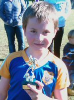
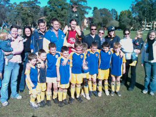

| Match Report - 17 July 2010 |
|
|
|
|
|
|
|
|
|
|
North Ryde U\6 Green B's played a great game with their defence being outstanding,
keeping Gladesville scoreless. Man of the match Luke dribbled very well today and
scored some good goals. He was well supported by Ryan, Lachlan, Jasmine and Jay
who all tackled and passed the ball well. Luca showed us some of his "World Cup"
celebrations after scoring some good goals.

The team is improving every game and now passing the ball very well. We wish
Brandon a speedy recovery and look forward to seeing him next week.
- Brad Glassock (Parent)
|
|
|
|
|
|
Well, it looks like the week off did the team a world of good. With Coach Mark
and Reilly both away this week hitting the slopes, Manager Will stepped into the
coaching role determined to put his own stamp on the game, reviving memories of
his own debut for Bass Hill RSL U7's in the late 70's.

After a pre-game pep talk, the White B's produced a fine defensive display in
the first half which also included some strong runs in attack only for the kick
at goal to spray just wide, and they came off at 0-0.
The red-faced, barely controlled tirade by the stand-in Coach at half time
would've made Alex Ferguson proud, and it seemed to immediately pay dividends
when Joshua caught the opposition off guard with a quick kick-in to Alexis who
deftly spun and kicked into the top corner of the goal. This was soon followed
by an angled shot from close range by Christian, who also along with Blake pulled
off some great tackles to nullify the opposition attack. Idan's many attacking
raids were finally rewarded near the end of the match with a goal, as well as
the Player of the Week award.
- Will
|
|
|
|
|
|
Well this week is was a very cold 8:15am start and the team was excited to have
their coach Neil present to umpire for the game. The teams were very closely
matched in skills and determination. Two of our players were having fun on
holidays but we definitely missed Luca and Liam in the game.
Everyone in the team played there best and endurance was difficult in the cold
without subs. Special mention goes to our 4-year old star Christian Robson who
was ready to step up when required to help out tired players. Overall a very good
game, mainly defensive. Kevin made some skillful runs down the field,and was
unlucky not to get a shot on goal. Rishi was constantly attacking and defending
in the midfield with some very strong kicks down the field. Oliver was great in
reading the play, positioning himself and tackling after his holiday soccer camp
with Kick Start - well done! Emily made some strong kicks down the field and this
week's player of the match was Cameron for his strong defence and attack. Once
Cameron crossed that half way line he had so much determination and drive he was
unlucky not to convert a goal, maybe next week Cam.
- Sarah Robson
|
|
|
| U8 Red B |
|
North Ryde 1 - North Ryde Red A 0
|
|
|
|


Excellent playing conditions led to an exciting match between two great teams.
Both sides produced great shots on goal, with North Ryde B successful during the
second half with a goal by Nathaniel.
Excellent goal keeping by the two Luke's kept the opposition scoreless, despite
some committed drives at goal.
Player of the match: Nathaniel
- John Chappell
|
|
|
|
|
|
Well it started as a very cold morning and the steam was following us as we got
prepared to watch our boys. Not long into the game we were all warmed up and
supporting our champions of champions.
Sadly the 3-0 score didn't reflect at all the level of play by our boys. The
main thing I have noticed is the improvement of defence. Our boys are really
beginning to play like pros and are defending so well. The team take turns in
goals and again we can not complain about our goalie this game. Many saves
were made. The boys are really beginning to learn how to attack and the ball
skills are coming into play. There were no stand outs this week as all players
played a great game and kept the parents on their feet.
We are very proud of our players and the main thing is that they all give it
their best and enjoy it win or lose.
- Shelly
|
|
|
| U14 Division 3 |
|
North Ryde 2 - West Ryde Rovers 0 /
North Ryde 2 - Epping Eastwood 0
|
|
|
|
Wow what a weekend!
Two matches playing the top two teams in the competition.
On Saturday we played for second place in the competition against West Ryde
Rovers. We had plenty of chances to score in the first half and scored a goal
from a pass from Hayden to Kyle to Daniel Tidke, 1-0. The second half we were
constantly attacking the West Ryde goal and again Daniel scored! 2-0. At the
end the referee blew the whistle just as Hayden kicked a goal which was not
counted. Final score 2-0.
Well deserved player of the match was Nat Hawkins and the trophy was presented
by Paul. A special thanks to Dave Burnard for running the line.
On Sunday, we had a catch up match against the undefeated competition leaders,
Eastwood Epping Tigers. In our first encounter we had been in the lead until 10
minutes to go but they managed to equalise at 1-1. Our boys where pumped. The
first half you could feel the tension in the air. The parents were nervous but
the boys played well, and the score at half time was 0-0. In the second half
there was a hand ball by Eastwood in their goal area. Hayden lined up to take
the penalty. Everyone's eyes where on Hayden and he did well by placing the ball
into the right-hand side of the net. 1-0. Hayden rolled his shirt over his head
and ran back the boys rallied around him!
The battle continued, Eastwood tried hard but our defence was rock solid. Then
Kyle released a kick from the right-hand side wing and scored a great goal. He
has been practicing this kick! The boys and parents were ecstatic! The defence
stood firm and the final result was 2-0.
Both games are a credit to the whole team, each player contributed to this result
and we should be very proud of their efforts. Well done boys!
Well deserved player of the match was Chris Butterfield and the trophy was
presented by Paul. I'd like to thank all the parents who come to support our team,
you do make a difference. A special thanks to Peter Rolls for running the line.
- Joe Rosenfels (Manager)
|